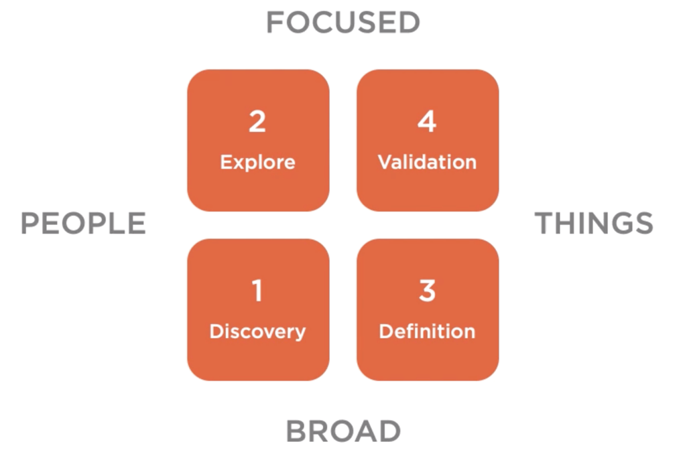
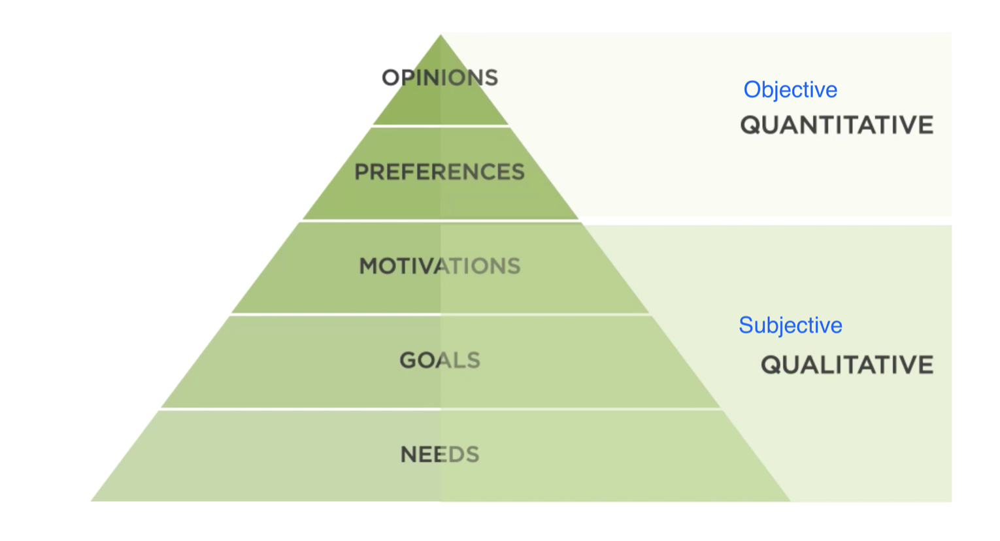
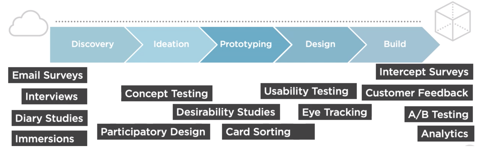

UX research aligns the designers world-view with that of the customer, enabling us to make better design decisions.
User research falls into four general categories, with each category allowing us to target our research to find out specific things.
Source: The ncredible Framework, Twig + Fish
Within these four categories we can also look for aspects of the user's expectations.
Source: Unknown

Source: Landscape of User Research Methods, Christian Roher
Interfaces in front of a user (either prototype or live product) getting them to complete tasks.
More info needed - WIPImmersing yourself in the user environment (home, workplace etc) and see how they really live and work and use projects.
More info needed - WIPBringing other people into the design processes. Stakeholders, users, other designers.
*** Marked for removal ***User organising topics into categories (and even label them) and helps you understand how to user thinks about information architecture and content.
Optimal Workshop - Card sorting software
https://www.optimalworkshop.com/optimalsort/
Gage the emotional response to a design, helping you decide on a visual design direction.
Microsoft Desirability toolkit
https://www.nngroup.com/articles/microsoft-desirability-toolkit/
Finding if users are satisfied or dissatisfied with your product/service. This is useful for improving/iteration but not important for ideation.
More info needed - WIPIf you want see your participants up close and in-context, diary studies should be a part of your research toolkit.
How to Conduct a Diary Study
https://dscout.com/people-nerds/diary-study-guide
Great for getting feedback on lots of ideas and which direction to take.
More info needed - WIPQuantitate and technical research method based on data collection. Tracking error rates, number of clicks, time on page, satisfaction ratings. Needs large sample of people.
More info needed - WIPCollecting the path of many visitors across your website and using statistical analysis to see what performs best for a conversion goal.
More info needed - WIPShow 2 or more variations to users to test which is better for the conversion goal. End of the product development phase, needs large numbers of people.
More info needed - WIPDone by software tool instead of a person. Cheap and easier to produce than lab studies.
More info needed - WIPIntercept live visitors on the website and ask them questions such as, where you able to find what you're looking for. Good for capturing satisfaction score or NPS.
More info needed - WIPGreat way to collect feedback after product launches.
More info needed - WIPUX research should be done though-out every stage of the whole project, not just done once at the start of the project. Different methods are better suited to different times and to find out different things.
Source: Unknown
| Phase | Research Technique | Deliverables |
|---|---|---|
| Discovery | Exploratory, fundational, surveys, field studies, immersions, interviews | Survey findings, user research report, user journey map, experience map, personas/archetypes |
| Ideation | Desirability testing, concept validation, card sorting | Concept testing report, cart sorting findings |
| Ideation | Desirability testing, concept validation, card sorting | Concept testing report, cart sorting findings |
| Prototyping and Design | Usability tests | Usability reports |
| Build | Analytics and feedback | Analytics reports, user feedback report |